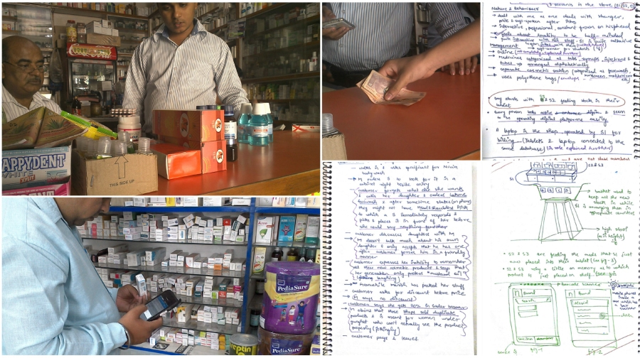
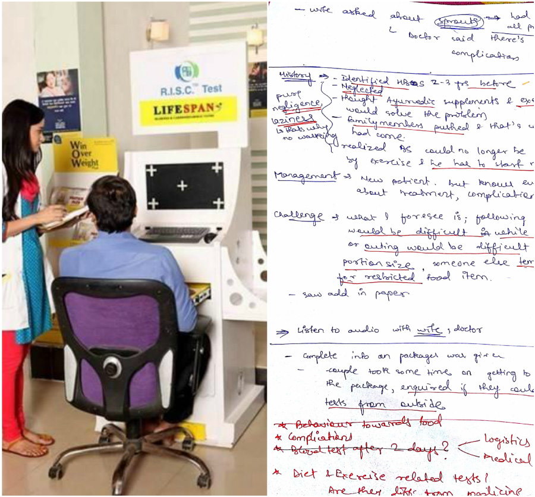
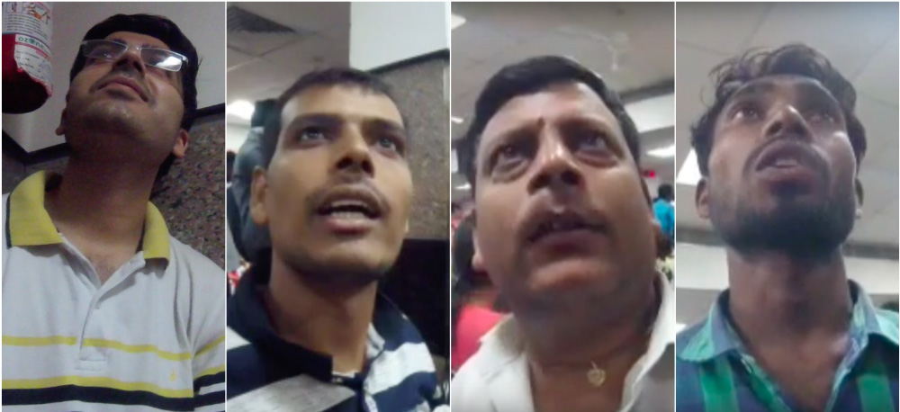

Conduct
Conducting ethnographic study
“Conduct your research with an open mind” said Mridu, while prepping me for field research. We needed our research to be as open-
ended as possible without any personal bias.
Observing Pharmacists
I would go to some random pharmacy in the city and convince the pharmacist to stay in his store for a day. I would then find a discreet
spot in the store and start to record my observations.
“I observed 3 pharmacists in a span of 5 days spending about 5-6 hours with each.”
I used the “AEIOU” technique to observe participant’s activities, his interaction with customers and environment, artefacts etc. I
mostly made notes and sketch notes to record my observations besides photographs, videos and audio recordings.

Photographs and Notes taken during FOTW observation of pharmacists
Following diabetics on their routine check-up
I visited a dedicated clinic for diabetes patients where they consult with a diabetologist, a dietician and a therapist. I
followed diabetics on their journey to their routine visit to the clinic.
“I shadowed 3 diabetics in a span of 2 days spending about 2-3 hours with each.”
I also conducted a small interview with the patients as well as their caregivers after the exercise to clarify any doubts and gain a deeper
insight into their lifestyle. I also interacted with diabetologists, dieticians and consultants but found their views to be a little biased.
Note-taking and audio recording methods were extensively used to record observations.

Participant undergoing a test(L) and Notes(R) taken during shadowing diabetics
Visiting cardiology and pulmonary departments at aiims
I visited the AIl India Institute of Medical Sciences, New Delhi, to observe and interact with cardiac and pulmonary patients. I prepared a small
questionnaire with open ended questions before hand to guide me through the interview.
“I interviewed 2 cardiac patients, 2 pulmonary patients and 2 caregivers spending about 1.5-2 hours with each.”
I interviewed the patients and their caregivers following a semi-structured interview fomat, with major focus on the challenges they faced during disease diagnosis. I recorded all the interviews on a GoPro camera.

GoPro snapshots from Contextual Interviews